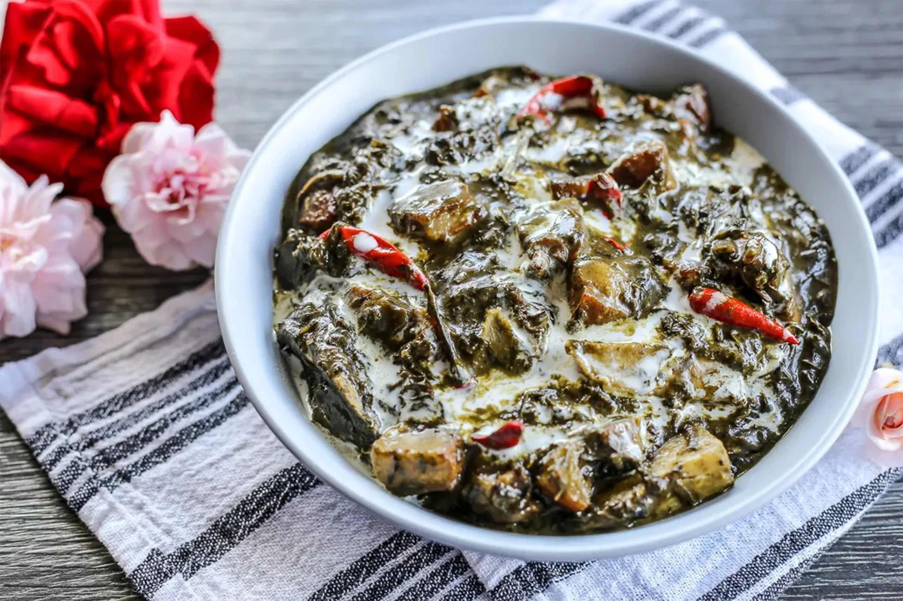

Laing (Taro Leaves in Coconut Milk)

Ingredients
- 2 cups dried taro leaves
- 2 cans of coconut milk
- 1 onion, chopped
- 4 cloves of garlic, minced
- 1 thumb-sized piece of ginger, chopped
- 2 pieces of green chili
- 2 tablespoons of shrimp paste
- Salt and pepper to taste
Instructions
- In a pan, sauté the onion, garlic, and ginger until they become aromatic.
- Add the shrimp paste and cook for another 2 minutes.
- Add the coconut milk and bring it to a boil.
- Put in the dried taro leaves, but do not stir. Allow the leaves to absorb the coconut milk. This will take about 20-30 minutes.
- Once the taro leaves have absorbed the coconut milk, stir gently, then add the green chilies.
- Lower the heat and let it simmer for about 30 minutes or until the sauce thickens.
- Season with salt and pepper to taste.
- Serve hot with rice.
Time
- Preparation Time: 10 minutes
- Cooking Time: 60 minutes
- Total Time: 70 minutes
Enjoy Cooking!